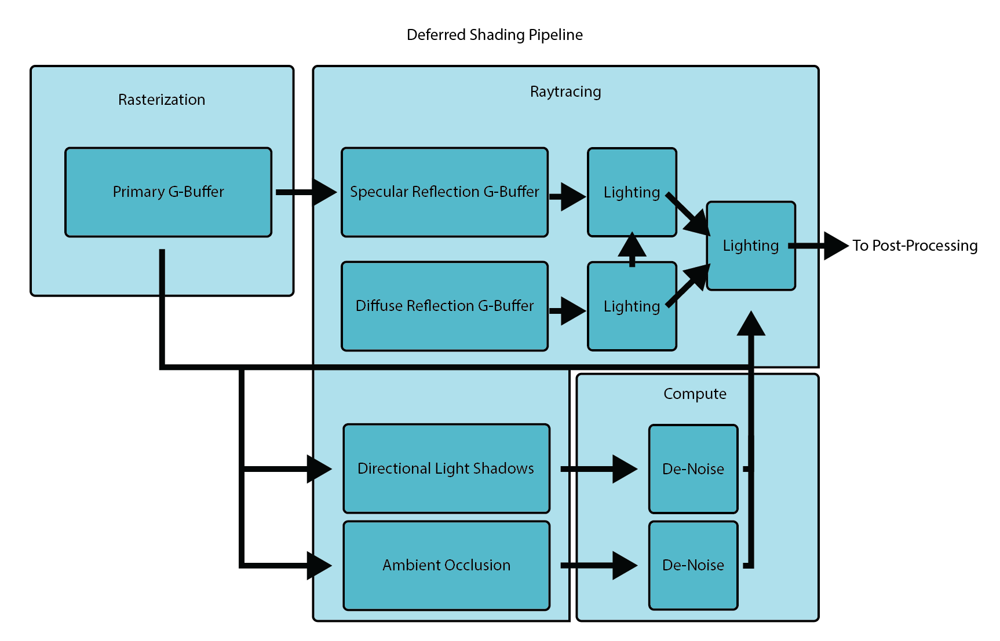

Hybrid Deferred Shading
Overview
This project implements a physically-based hybrid deferred shading pipeline that utilizes modern hardware accelerated raytracing to render shadows and global illumination using some novel methods and is suitable for realtime applications such as video games. A key design goal was to have a unified code path for lighting both the primary view and raytraced G-buffers for maximum consistency in results. This was my final project for a real-time graphics course (CS248B) at Stanford.
Background
A hybrid rendering pipeline is one that utilizes both rasterization and raytracing shaders to render geometry or various effects. While rasterization is optimized for and capable of rendering geometry from the point of view of a perspective camera and computing direct lighting, it cannot be efficiently and/or accurately used to capture indirect lighting as well as raytracing can; therefore it makes sense to use a hybrid pipeline that uses rasterization for rendering the primary view and raytracing to handle indirect lighting.
Deferred shading is a technique that decouples the rendering of geometry, the results of which are stored in a geometry buffer or G-buffer from lighting, with the latter being done afterwards in a separate render pass. The main advantange of this is that lights in the scene only have to be evaluated for the pixels that it will actually affect which is achieved by additional techniques such as tiled lighting or clustered lighting that cull lights either in screen or frustum space, respectively. The main disadvantages are the memory consumption of the geometry buffer(s) and the difficulty of handling transparancy. Although typically deferred shaing is done in screen-space, it could also be applied to raytraced views by raytracing geometry buffers instead of rasterizing them.
Pipeline
Combining these two concepts, we can design a rendering pipeline that first rasterizes a G-buffer for the primary view and uses its depth and normal buffers to launch rays for various raytraced lighting effects such as shadows, ambient occlusion and specular reflections. For specular reflections, I decided to also use deferred shading by raytracing a G-buffer and rendering first-order lighting for these reflected pixels in almost the same way as for the primary view for maximum lighting consistently in reflections (although this is not completely necessary and doubles the memory consumption). It is useful to decouple lighting effects here because effects such as soft shadows and ambient occlusion may only be raytraced at 1-2 spp and thus require effect-specific denoising.
While the aforementioned techniques of tiled and clustered lighting are useful for culling lights in the primary view, we need a way to cull lights for the raytraced views as well. Typically this is done using a bounding volume heirarchy (BVH) for lights as an acceleration structure but I decided to implement a novel algorithm that uses a sparse voxel octree (SVO) instead. The main advantages of my algorithm are high flexibility, low overhead and fast traversal which allows the SVO to be rebuilt from scratch every frame entirely via compute shaders. This SVO can be used to cull all light volumes in world space and thus can be used for lighting in any situation, including in cases of forward shading or transparency.
The last major piece of the pipeline is rendering diffuse reflections. This would be too expensive to raytrace per-pixel for both primary and reflection views so I implemented a slightly novel version of the DDGI algorithm which raytraces light probes. Again, instead of directly rendering the irradiance for each light probe, I decided to use deferred shading here as well out of convenience although the alternative would probably make more sense in this case.
SVO Light Culling
My SVO light culling algorithm is executed entirely in compute shaders and can easily cull 1K lights with negligible impact on render time. Every frame an SVO encapsulating a large area (4096^3 units in my implementation) is created and is progressively subdivided based on the following rules: if no light volumes intersect the node, do not subdivide; if a node is entirely contained within all of the light volumes it intersects, do not subdivide; if a node partially intersects a light volume then subdivide until the maximum depth is reach. This subdivision scheme increases the granularity of the SVO only where it is needed and will help reduce the number of lights evaluated. Similarly to clustered deferred lighting, the leaves of the octree contain indices to separate a light index list which in turn contains indices to a global light list. Since the number of lights within any node can range from 0 to the maximum number of lights, the light index list must occupy a decent amount of memory (dozens of megabytes) to accommodate this, therefore I set a limit of 1024 lights although the algorithm could in theory handle many more than this. When lighting either rasterized or raytraced G-buffers the light loop traverses the octree to retrieve the lights that intersect a given world space position.
My first implementation of this idea did not properly take advantage of GPU parallelism and tested many lights against each node sequentially and ran abysmally slow; my current implementation tests each light against each SVO node (a simple AABB) completely in parallel and is very fast and proves that the algorithm is viable - doing this properly was a major challenge and required the algorithm to broken into several steps. For each depth level the following is executed in separate compute dispatches: first, all of the new, tentative child nodes are generated from the previous depth’s nodes; then each node is tested against each light that its parent intersects, completely in parallel and the results are written to a buffer whose values indicate if the light intersects the node and if so, if it is entirely contained within a node; finally all of the tentative child nodes are checked to see if they should be added to the SVO structure or discarded based on the light intersections and the corresponding light list information is written to the light list buffer; this process is repeated sequentially until the maximum depth is reached. There are also calculations that have to be made to ensure that the correct number of compute threads are dispatched without transferring any data to the CPU.
Specular GI

My specular GI implementation simply traces perfect mirror reflections using the main camera’s G-buffer to launch rays. I attempted to implement a screen-space roughness technique [2] that blurred the result and stored the “rough” results in the mipmaps of the reflection irradiance buffer but ultimately I scrapped this for now. One of the major issues with the raytraced reflections is that the correct texture mipmap is not always calculated in the hit shader and I couldn’t find many resources on how to do this properly. I implemented the raycone technique [3] to do this but my implementation doesn’t always work properly. My implementation only captures first order reflections and uses the sky rendering as a fallback for second order specular reflections. I experimented with deferred second order reflections which worked fine but I scrapped this. A cubemap could also be used instead (or the diffuse GI result) with reasonable results for a video game.
Diffuse GI
The diffuse GI system is the most complex and computationally expensive system implemented and is based on the DDGI algorithm [4] but extends it by using another SVO structure. The original DDGI algorithm uses raytracing to update light probes in realtime and these light probes are organized in a regular 3D grid which has a consistent probe density and creates many probes in potentially empty space. I figured that this could be improved upon by concentrating probes near actual geometry and allowing for variable density. After the success of my light culling technique I decided to use an SVO to do this. My algorithm first creates a low resolution voxelization of the scene and stores a binary value in a 3D texture that indicates if geometry is present in a voxel or not. Then I create an SVO and subdivide it repeatedly if geometry is present in the cells contained within a node until the desired density is achieved. I also use distance to the camera as a metric to determine the density of the nodes. Many different methods could be used to control node density and this algorithm is very flexible and thus suitable for games or other realtime applications. This part of the process is done entirely on the GPU in a manner very similar to the light culling algorithm described above.
Since the DDGI algorithm works by trilinearly interpolating between a cube of light probes, I create probes at the eight vertices of each leaf node (which is an AABB) and the leaf node stores the 8 indices to these probes (instead of child node SVO indices). I could not figure out a way to do this last step completely on the GPU; since vertices and thus probes are shared between nodes it is necessary to retrieve the unique vertex positions which I ultimately did using a dictionary (mapping vec3’s to ints) but this required transferring some data (not a lot) to the CPU. Although this transfer is done asynchronously and does not stall the renderer, it introduces some latency (and additional complexity in scheduling) in the GI SVO updates which means the probe density will lag slightly behind the movement of the camera or scene geometry (which isn’t a huge problem). If this last step could also be done on the GPU then this lag could be removed.
The original DDGI algorithm also relied on a “hysteresis” system that blended probes with the results from previous frames to account for the low number of ray samples taken but this introduces major amounts of light lag. I instead opted to simply trace more rays (512 per probe per frame) to avoid light lag and the performance with ~4K probes is already reasonable on my 2080S. Adding hysteresis to my implementation would require two probe irradiance and visibility buffers since the locations of probes in these buffers are not persistent between SVO updates. Since the probes themselves are also updated every frame there is little to no lag in the actual lighting results which makes this implementation very suitable to video games where lighting situations may change rapidly.
The GI lighting and evaluation step is done using the unified deferred lighting shader by traversing the GI SVO and sampling the probe irradiance and visibility textures as in the original DDGI algorithm. The unified lighting path allows the GI results to affect the raytraced specular and diffuse lighting and allow for infinite diffuse bounces which can realistically illuminate environments and adapt to realtime lighting changes very quickly (this introduces some minor light lag). One missing component is that there is no blending in the transition between probe density levels but adding this should not be very difficult.
Shadows
The deferred lighting shader traces hard shadows for every light in the scene which allows for consistent shadows for all lights, in all views except for the main directional light in the main view which has soft shadows traced (at 1spp). I used a naive gaussian blur to denoise the result but this overblurs the shadows and introduces halos since it is not depth aware. The main light shadow will still be hard in reflection views so there is noticeable inconsistency (the same technique could be used to trace soft directional light shadows in reflections but this was not implemented).
Ambient Occlusion
While the diffuse GI system described above does capture some large scale ambient occlusion, I additionally trace AO rays at 2spp for the primary view only to capture smaller scale occlusion and blur the result using the same gaussian blur as for shadows (again overblurring).
Physically Based Shading
I use Unity’s builtin physically-based BRDF and copied this into my implementation (I couldn’t directly use the builtin code because it was not compatible with raytracing shaders). This BRDF is based on Disney’s diffuse model and the GGX Cook-Torrance specular model.
Sky Rendering
The sky rendering implementation is entirely based on Eric Bruneton’s precomputed atmospheric scattering work [1]. The sky is rendered in a unified way for both the main camera view and for raytraced specular and diffuse reflections inside of the deferred lighting raytracing shader.